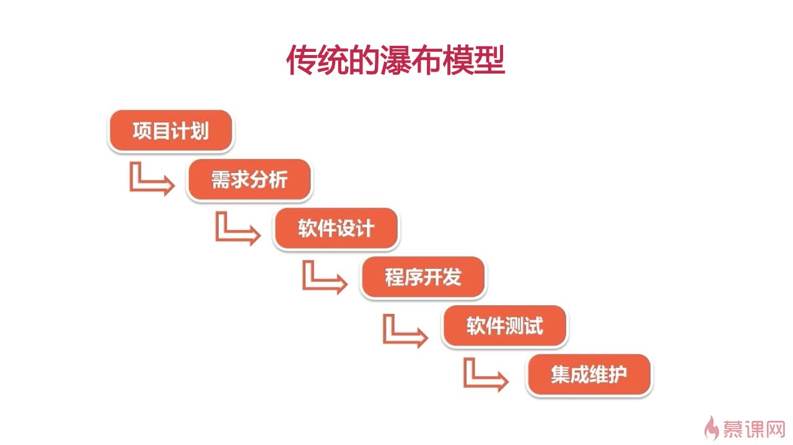
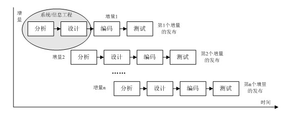
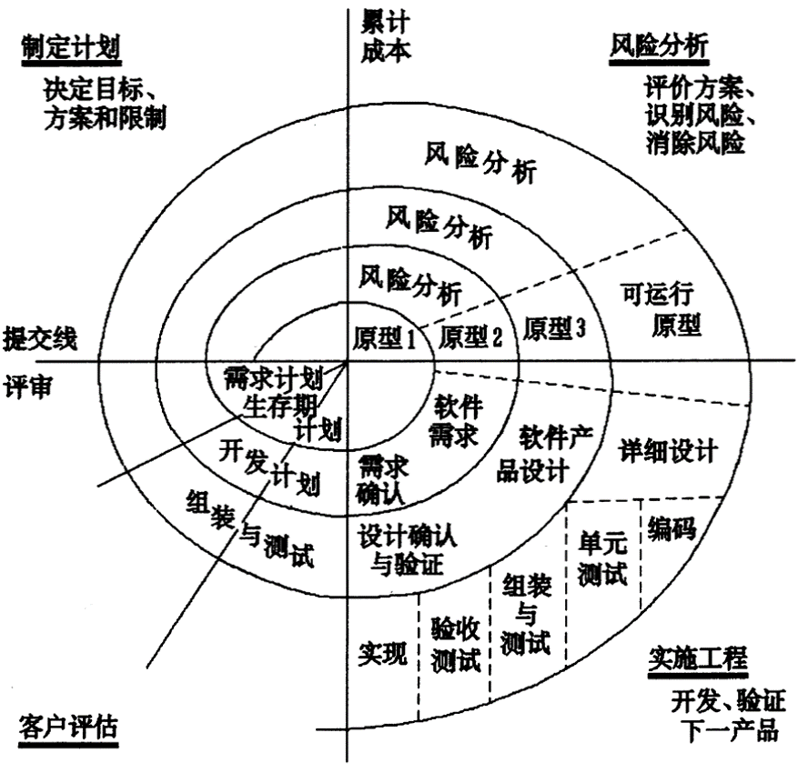

系统分析作业3
简答题
简述瀑布模型、增量模型、螺旋模型（含原型方法），并分析优缺点
从项目特点、风险特征、人力资源利用角度思考
瀑布模型

优点
- 定义了软件开发基本流程与活动，提供了一个模板，这个模板使得分析、设计、编码、测试和支持的方法可以在该模板下有一个共同的指导。
- 有利于对于大型软件开发的管理，更好分配人力资源
- 当前一阶段完成后，您只需要去关注后续阶段。
- 为项目提供了按阶段划分的检查点。
缺点
- 各个阶段的划分完全固定，阶段之间产生大量的文档，极大地增加了工作量，浪费了一定程度的人力资源。
- 由于开发模型是线性的，用户只有等到整个过程的末期才能见到开发成果，从而增加了开发风险，风险控制能力差。
- 对于用户需求的改变不能做到较好的适应，风险控制能力差。
增量模型

优点
- 将待开发的软件系统模块化，可以分批次地提交软件产品，使用户可以及时了解软件项目的进展。这是上面的瀑布模型所无法做到的。
- 通过以组件为单位进行开发可以有效降低了软件开发的风险。一个开发周期内的错误不会影响到整个软件系统，风险控制能力较强。
- 开发顺序灵活。开发人员可以对组件的实现顺序进行优先级排序，先完成需求稳定的核心组件。当组件的优先级发生变化时，还能及时地对实现顺序进行调整，风险控制能力较强。
缺点
- 该模型的基础是待开发的软件系统可以被模块化，如果待开发的软件系统很难被模块化，将不利于我们使用增量模型进行开发。
- 对于项目管理人员把握全局的水平提出了一定的要求。
螺旋模型

优点
- 增加了设计上的灵活性, 我们可以在项目的各个阶段进行变更。
- 通过以小的分段来构建大型系统,使成本计算变得简单容易。
- 从图上可以看到，客户始终参与每个阶段的开发，从而保证了项目不偏离正确方向以及项目的可控性。
缺点
- 管理不得当的话，过多的迭代次数会增加开发成本，延迟提交时间，进而可能出现软件开发完毕后，和当前的技术水平有了较大的差距，无法满足当前用户需求的情况。
- 风险分析需要额外的人才资源和成本，而且在风险较大的项目开发中，如果未能够及时标识风险，势必造成重大损失；
简述统一过程三大特点，与面向对象的方法有什么关系？
三大特点分别为:
-
用户为中心
用例分析作为一项软件技术，远远比功能分解复杂。大部分需求人员不具备编写用例的能力，用户多数看不懂用例。因此，在交互过程中，传统以功能列表描述为主的《需求规格说明书》应用更加广泛。 架构为重心 对于业务逻辑非常复杂的系统，打造一个强健的架构是必须的。但对于一些业务逻辑相对简单，而用户交互逻辑复杂的系统，过于强调架构似乎没有必要。例如，对于一个有着很多模块的网站，各个模块相对独立，访问各自的表，维护一套用例图、类图、时序图就成为累赘。 风险驱动 UP的另一个驱动就是风险，因为如果你不主动预测和防范风险，风险就会主动攻击你。UP需要对软件开发中的风险进行分析、预测并关注软件的构造。
统一过程就是是一个面向对象的软件开发技术，给出了有关软件开发过程组织及实施的指导。
简述统一过程四个阶段的划分准则是什么？每个阶段关键的里程碑是什么？
划分准则
统一过程按照其工作和迭代在时间上被分为四个顺序的阶段。
每个阶段关键的里程碑
- 初始阶段: 生命周期目标里程碑，主要目的就是建立目的的范围和版本，确定项目目标的可行性和稳定性，提交结果包括需求和用例
- 细化阶段: 生命周期结构里程碑，该阶段的目的就是对问题域进行分析，建立系统需求和架构，确定实现的可行性和稳定性，提交结果包括系统架构、问题领域、修改后的需求及项目开发计划等相关文档
- 构建阶段: 初始功能里程碑，该阶段增量式开发可以交付给用户的软件产品
- 交付阶段: 产品发布里程碑，目的就是将软件产品交付给用户
软件企业为什么能按固定节奏生产、固定周期发布软件产品？它给企业项目管理带来哪些好处？
原因
因为软件企业采用了统一过程的开发，而统一过程作为一个迭代增量的过程，它有初始阶段、细化阶段、构建阶段、交付阶段四个阶段，并且他包含了每个阶段结束时都需要进行相应的目标评估，来判断是否能够进入下一个阶段。明确了不同阶段迭代的里程碑与目标，支持 CI/CD 的版本交付，为固定项目周期提供了可能。在此基础之上，软件公司可以利用软件产品范围的弹性，合理规划范围（20%业务决定80%满意度），使得软件生产能够按固定节奏运行，固定迭代周期、固定开发周期、固定升级周期。
好处
- 方便了需求的不断更改
- 提高了软件团队的生产能力，以及软件生产效率
- 建立了非常明确的过程结构，而且每个阶段都有明确的里程碑和判定标准，确保了软件的质量
- 稳定的固定的开发节奏有利于项目的及时交付，降低了延期的风险，保证项目的顺利完成，并通过稳定的开发吸引更多用户